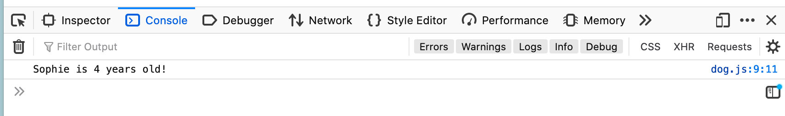

Modules are an important tool used for to keep your codebase organized and readable, especially when as it grows into a larger and larger project. They allow you to split your code into self contained chunks that can be updated independently and reused all over the project without writing redundant code.
This short example will show how code can be broken out into multiple scripts, and then brought back together to function as one cohesive app. We'll be using 3 files; index.html, main.js, and dog.js
In index.html, we'll just be creating the skeleton and adding our main.js script file, making sure to set the 'type' to module in the script tag
<!DOCTYPE html> <html lang="en" dir="ltr"> <head> <meta charset="utf-8"> <title>Module Example</title> <script type="module" src="./main.js"></script> </head> <body> </body> </html>
Next we setup our dog.js page. This will be the module getting imported in for use. I'm just creating a quick script that will take in a name and age for a new dog object, and have the ability to print out the info on the dog object.
export default class Dog {constructor(name, age) {this.name = namethis.age = age}}export function printInfo(dog) {console.log(`${dog.name} is ${dog.age} years old!`)}
By using the export command before both the class and function, we allow them to be imported to our main.js file. Scopes of code not marked for export can't be seen by the importing script.
Last we'll be creating the main.js file that our index is calling for. Main will be importing our Dog module, then creating an object using it's class structure, and using it's function to print out info on the newly created dog object
import Dog, {printInfo as printInfo} from '/ModulesExample/dog.js'const dog = new Dog("Sophie", 4)printInfo(dog)
The output from visiting index.html should look something like this:
